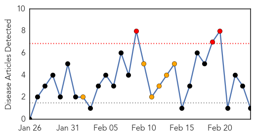
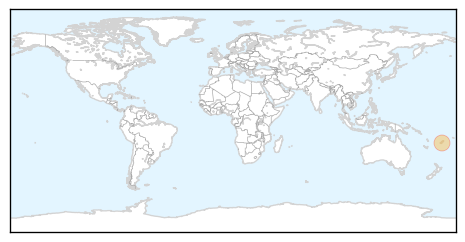
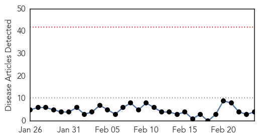
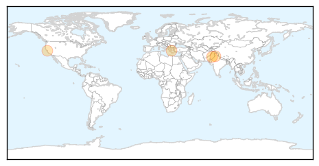

Dengue Fever
30-Day Web Trend
3 alerts, 6 warnings

30-Day Twitter Trend
1 alerts, 0 warnings

Article Locations
Article Confidences

Top Articles:
Top Tweets:
-
No tweets found for Feb 24, 2014
Swine Flu
30-Day Web Trend
0 alerts, 0 warnings

30-Day Twitter Trend
0 alerts, 0 warnings
Article Locations
Article Confidences
Top Articles:
Top Tweets:
- 0.561
- For the first time since the 2009 pandemic, H1N1 is the predominant flu virus in the US. http://t.co/UjXC0iUjsP